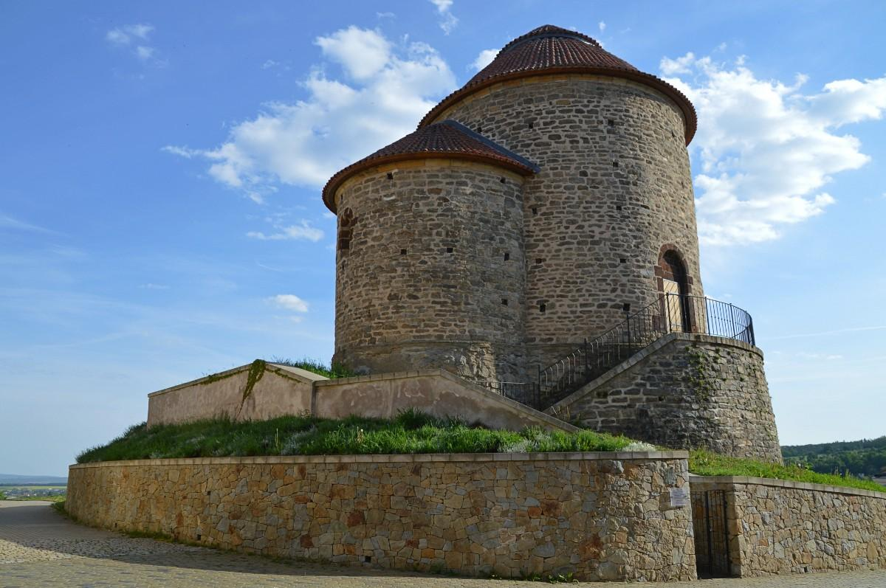
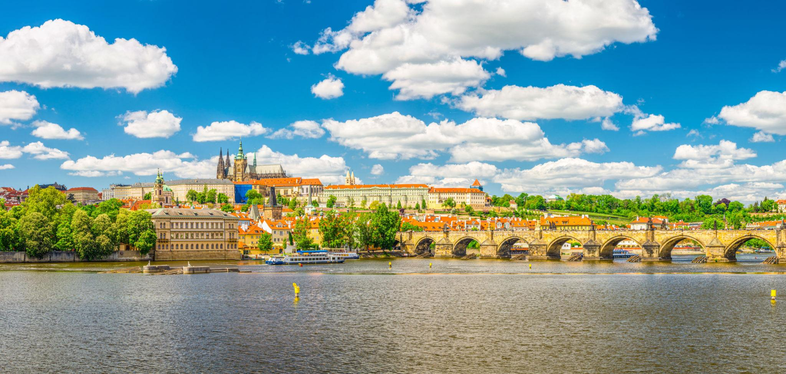
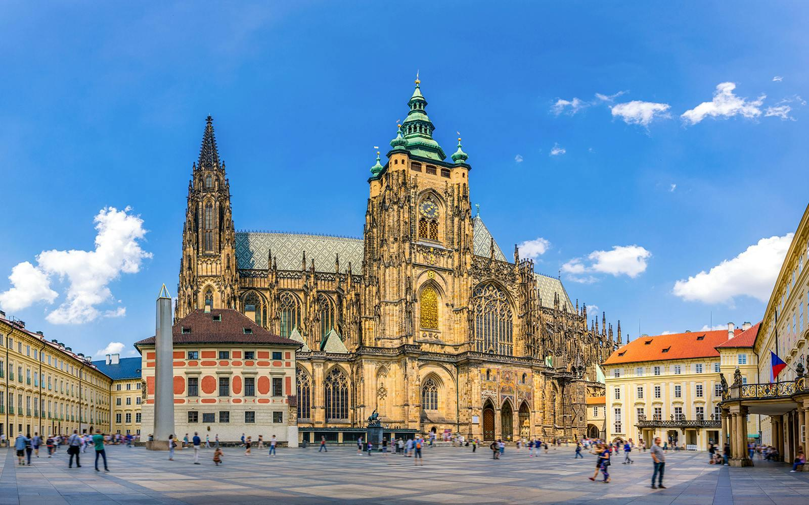
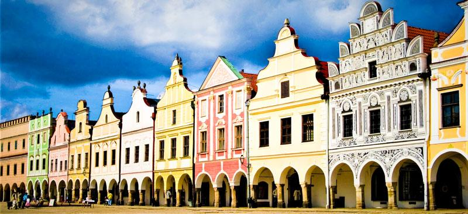
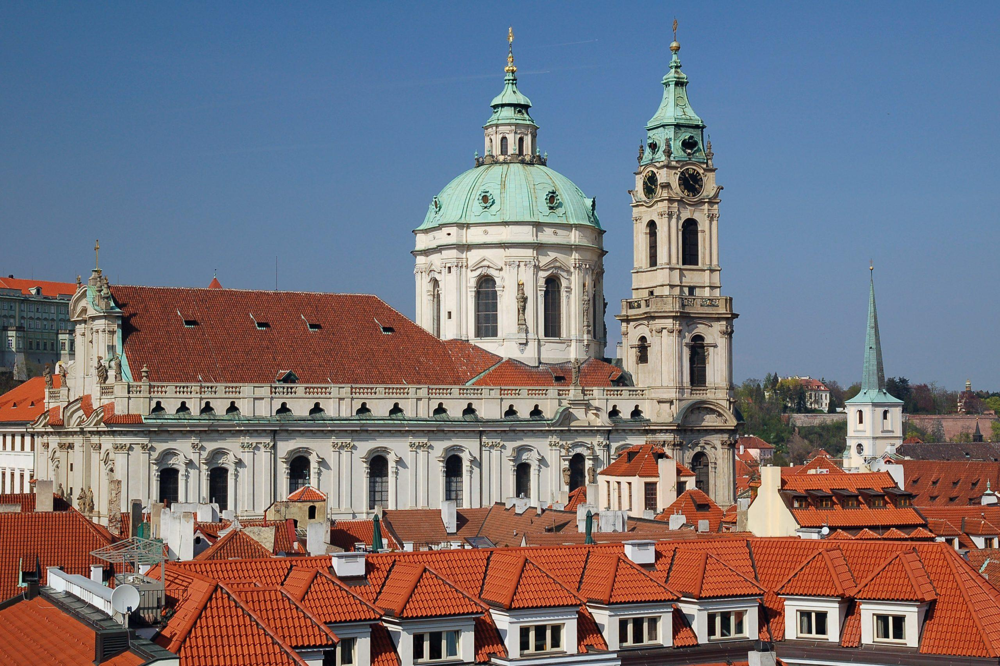
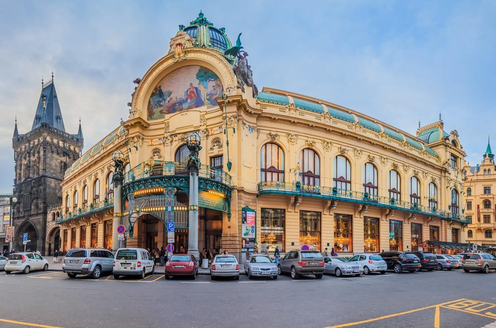
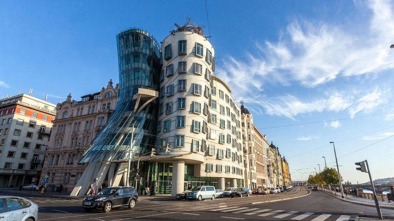
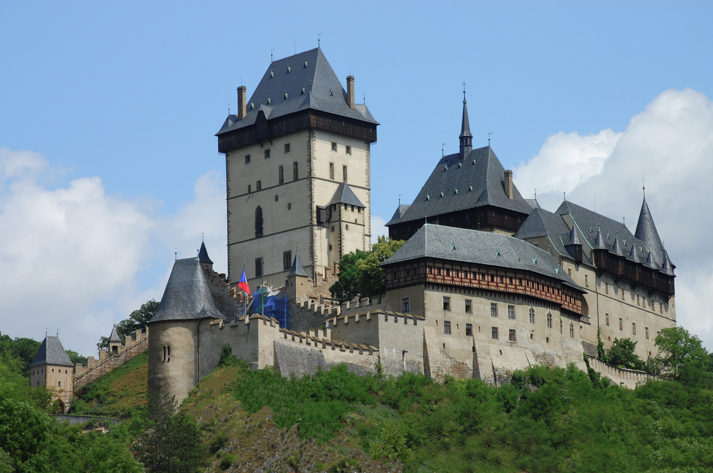
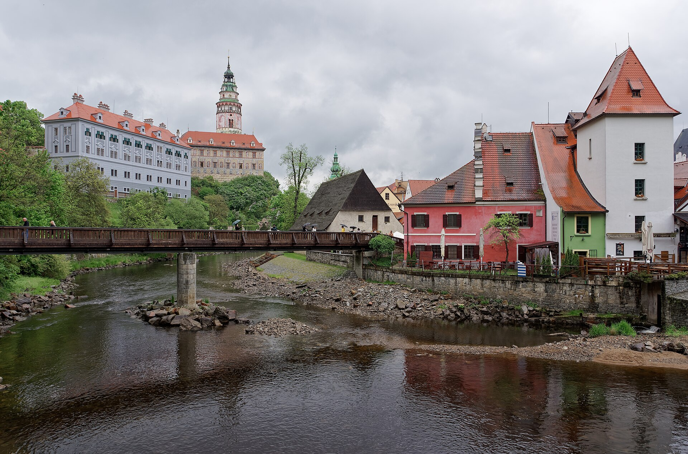

Romanesque Architecture
One of the oldest architectural styles in Czechia, known for its thick stone walls, small windows and simple rounded arches.

Discover centuries of history through the castles, towns and architectural treasures of Czechia.
Czechia is home to an extraordinary variety of architectural styles. From medieval castles and Gothic cathedrals to Renaissance towns and Baroque palaces, its buildings tell the story of centuries of history, art and culture.
Explore the different architectural periods that have shaped the appearance of Czech towns, castles and historic landmarks.

One of the oldest architectural styles in Czechia, known for its thick stone walls, small windows and simple rounded arches.

Gothic architecture is known for its pointed arches, tall towers and impressive stained-glass windows. It can be admired in many Czech churches and cathedrals.

Inspired by ancient Greece and Rome, Renaissance architecture brought symmetry, elegant facades and decorative details to Czech towns and castles.

Baroque architecture is famous for its dramatic shapes, rich decorations and grand interiors. It left a remarkable mark on Czech churches, palaces and historic towns.

Art Nouveau is known for its flowing lines, floral decorations and elegant details. Its influence can be seen in many Czech buildings, especially in Prague.

Modern architecture explores new materials, innovative shapes and functional design. Contemporary Czech buildings combine creativity with modern technology.
Discover some of the most beautiful architectural landmarks that make Czechia special.

Built in the 14th century by Emperor Charles IV, Karlštejn Castle is one of the most famous Gothic castles in Czechia.
Explore Karlštejn
This beautiful historic town is famous for its Renaissance and Baroque architecture, charming streets and impressive castle overlooking the Vltava River.
Explore Český Krumlov
This magnificent Neo-Gothic chateau is surrounded by beautiful gardens and belongs to the Lednice-Valtice Cultural Landscape, a UNESCO World Heritage Site.
Visit Official Website